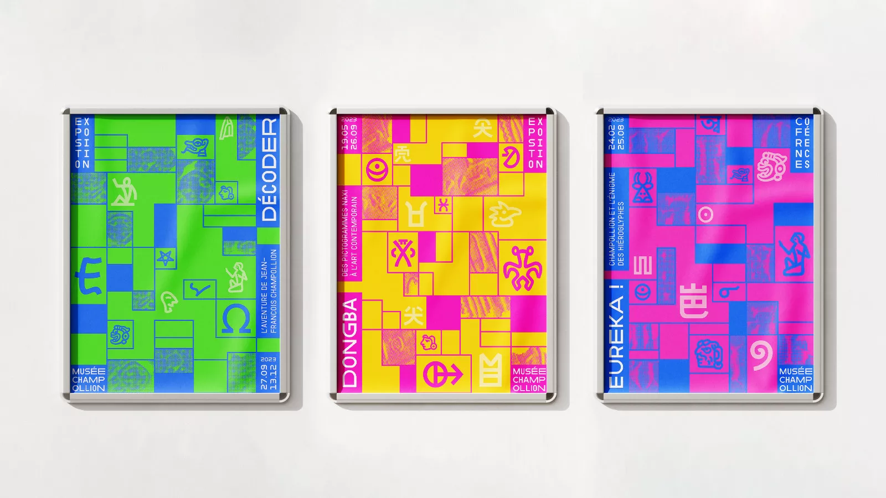
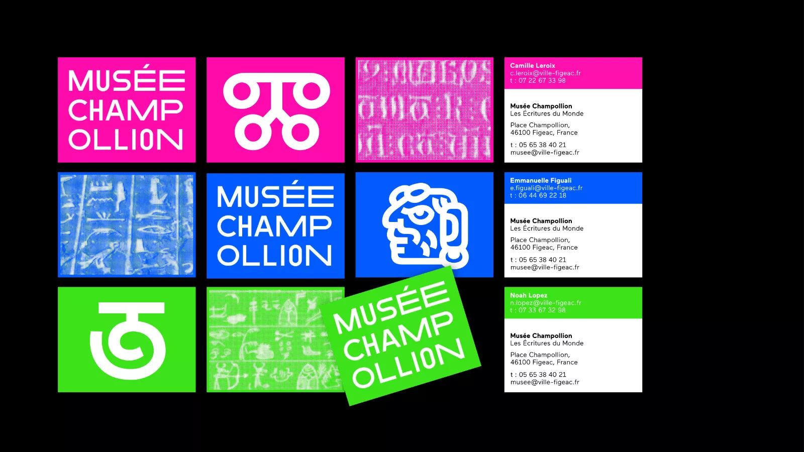
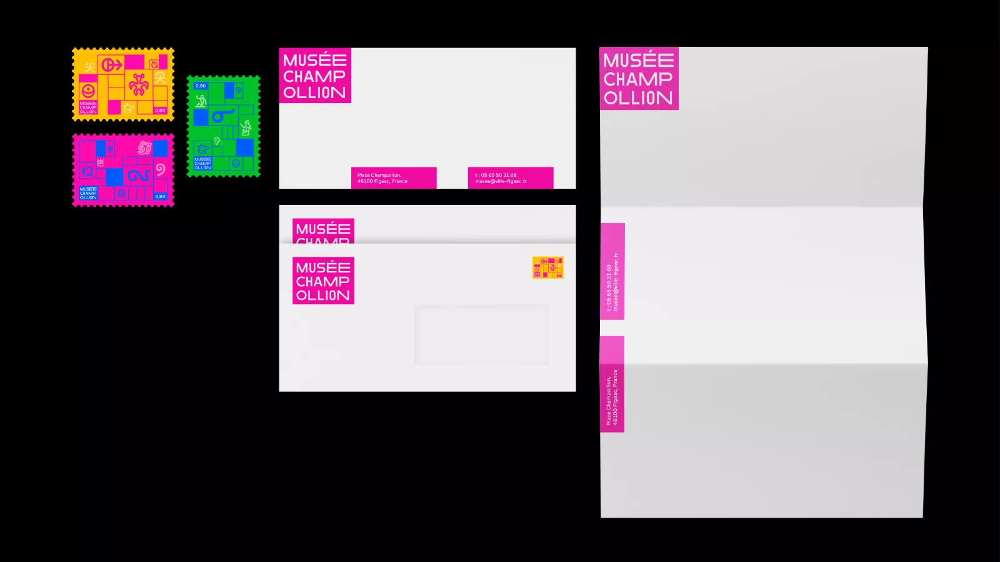
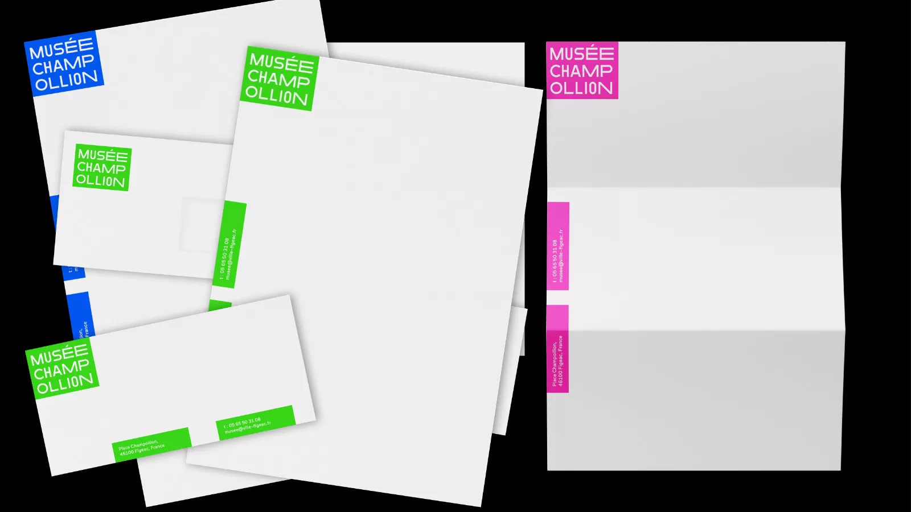
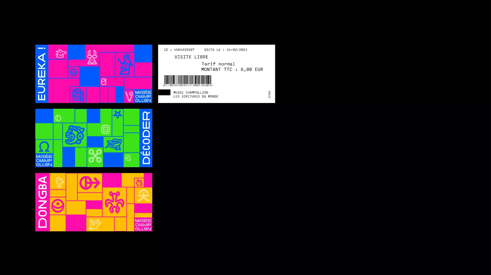
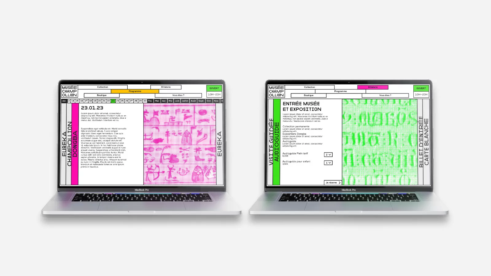
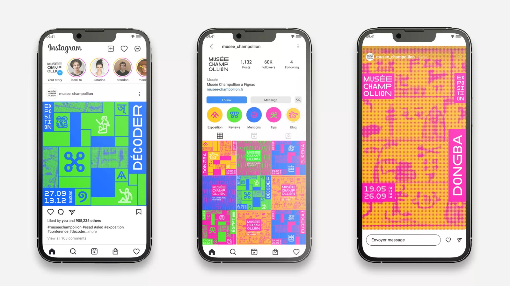

Musée Champollion
Identité graphique
Refonte de l’identité graphique du Musée Champollion (Les Écritures du monde), de Figeac.
Avec cette refonte, nous voulions mettre en avant la diversité et les richesses du musée, en dévoilant les collections à travers les caractères des écritures du monde, mais aussi en proposant une identité plus dynamique pour ramener de la visibilité au lieu.






